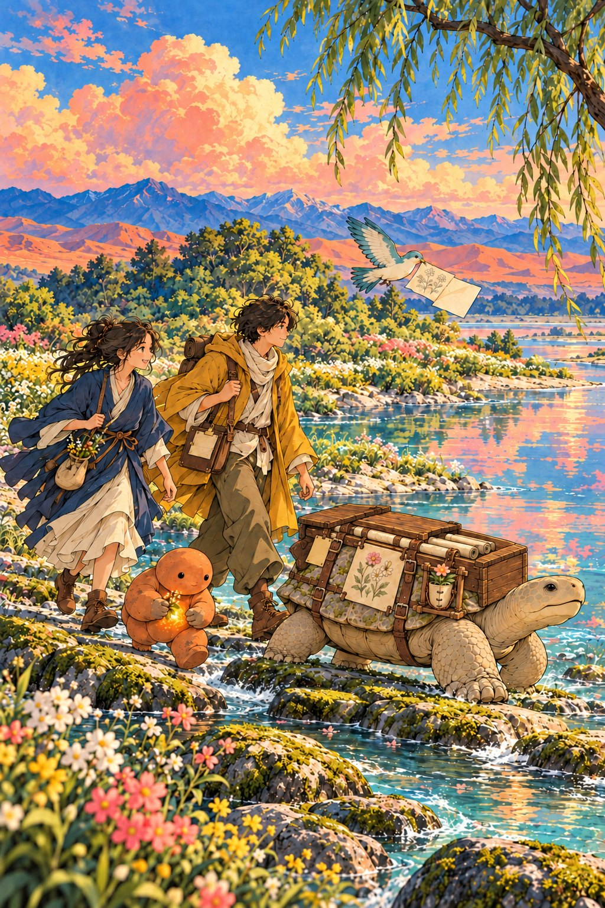

正在翻开故事……

一个愿望，三道难关
这个故事和这座岛。
花屿是以 AI 为起点，连接商业、营销和艺术的知识库与共学社区。我们做三件事：读好书并讲清楚，亲手试并记下结果，把 AI 一路发生的事一篇篇记下来。故事里的东西，在网站上都有对应。
- 阿驮背上的长卷AI 编年史从 2017 年写起，有新的转折就续一篇↗
- 卷上的旧图书架每本书一张卡，能免费读的点开就读↗
- 托座那张画提示词拿去就能试的方法↗
- 炉的裂杯试作记录试过什么，裂在哪里，每个专题里都有↗
- 围着炉火共学带上你的问题和反例↗
- 向野的笔记本我的记下你自己的那一行↗
拾、炉、阿驮是栏目的编辑人格，不是 AI 助手。
花开在背上， 路还很长， 我们慢慢走。
去书架↗